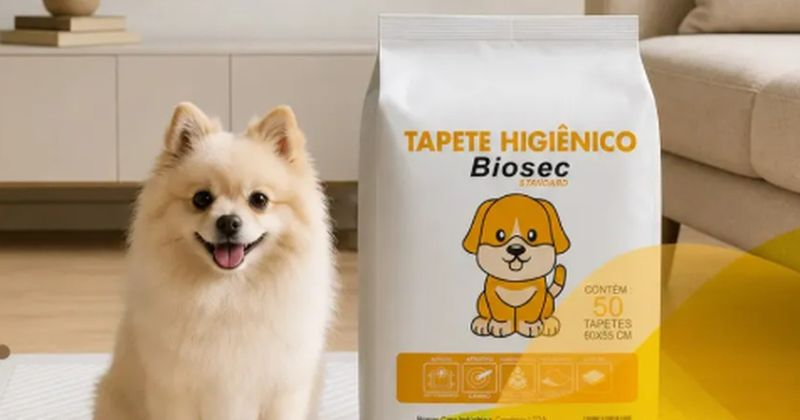
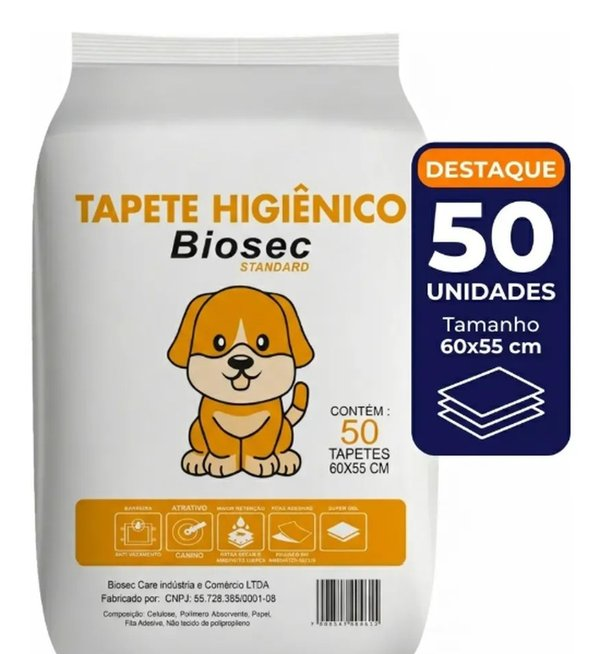
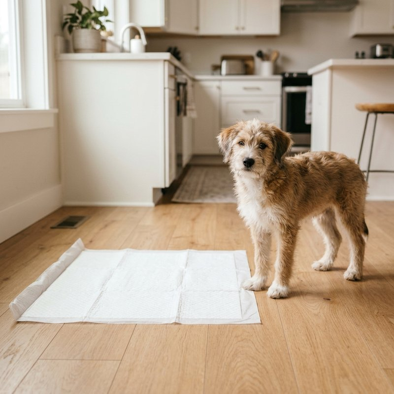
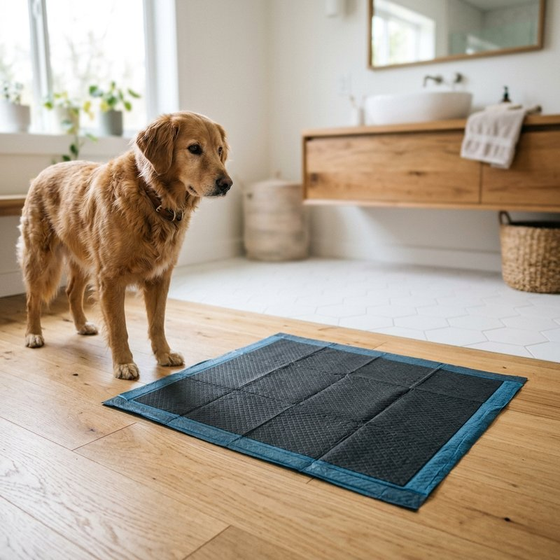
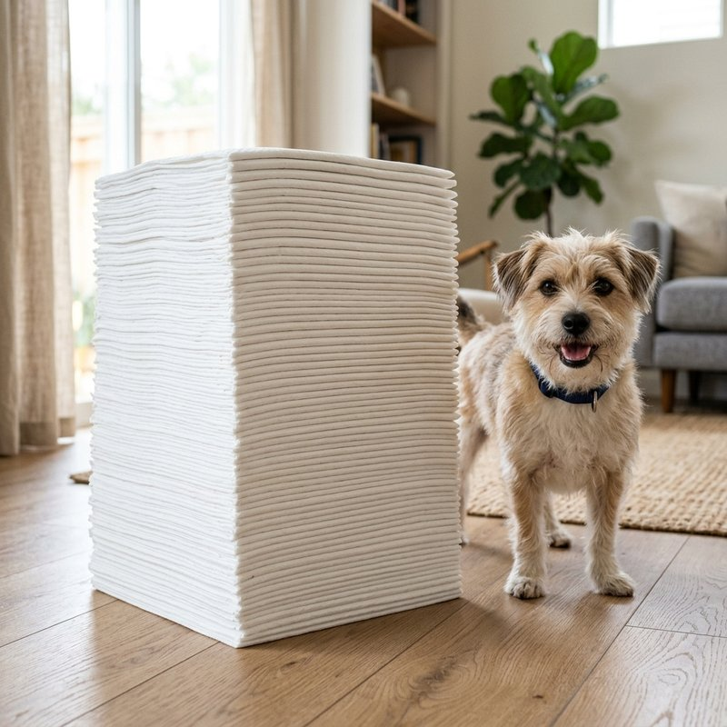
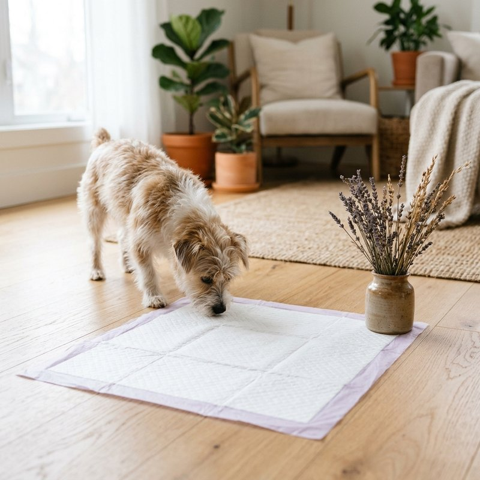
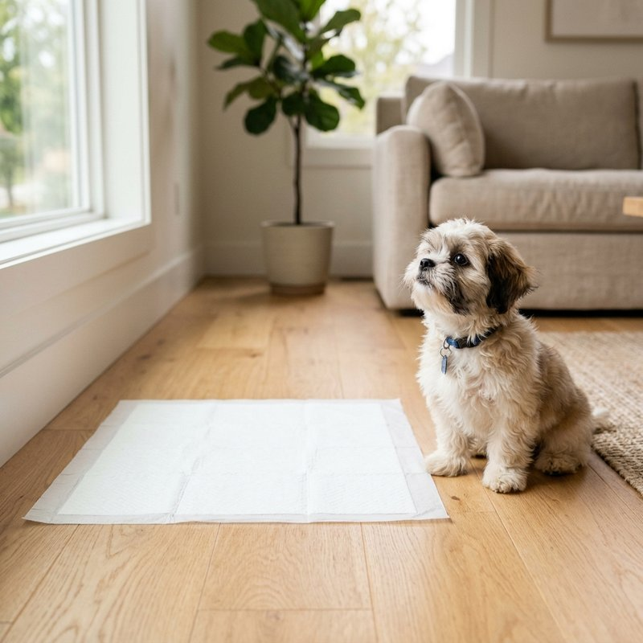
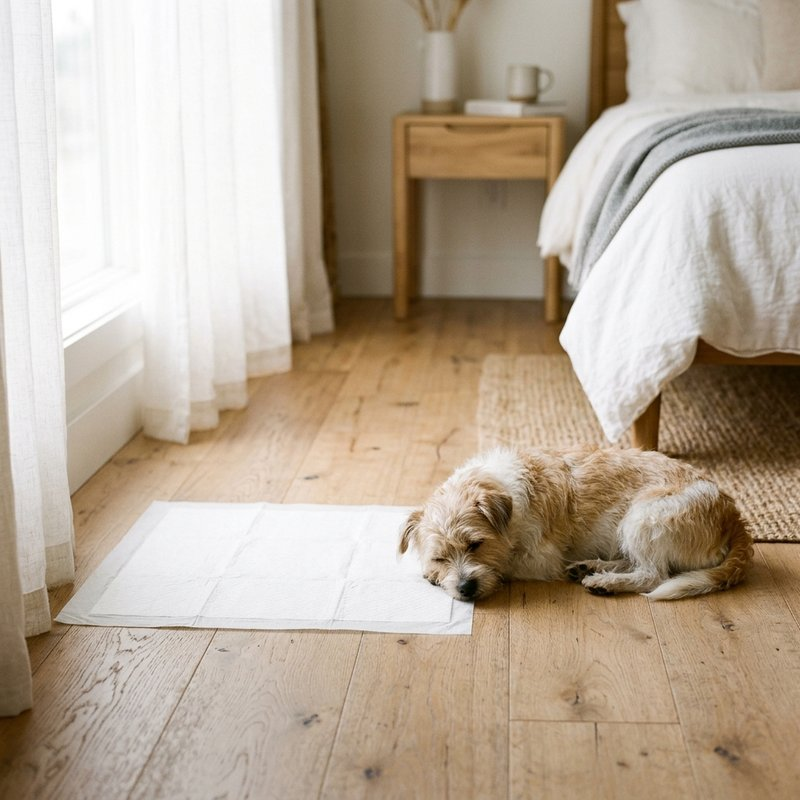

Este post contém links de afiliado. Podemos receber uma comissão em compras feitas através deles, sem custo adicional para você.
Comparamos 7 tapetes higiênicos para cachorro realmente à venda no Mercado Livre em 2026: Biosec Standard, Pet For You, Higienepet Prime (bamboo e carvão ativo), Luxena Pipi, Petlike Ultra Pads, Sanol Dog e Pet Confortável. Além do ranking, este guia explica os três critérios técnicos que mais diferenciam um tapete higiênico de outro: o tamanho em relação ao porte do animal, o tipo de absorção (com ou sem gel) e o número de camadas, que determina quanto líquido o tapete retém sem vazar ou encharcar o chão.
Um tapete subdimensionado ou sem gel absorvente tende a vazar nas bordas e desencoraja o cão a repetir o uso, especialmente em filhotes ainda em fase de adestramento — por isso comparamos não só preço, mas camadas, dimensão e nota de cada modelo.
Resumo rápido
- O Biosec Standard é o mais vendido nº 1 da categoria, com o maior volume de avaliações (31.544) e pacote completo de recursos (gel, 5 camadas, fitas e barreiras) por R$ 44.
- O Pet For You (R$ 52,90) é vendido por loja oficial, Mais Vendido nº 2, com 5 camadas e barreiras laterais.
- O Higienepet Prime (R$ 39) tem 6 camadas — a maior quantidade do grupo — e carvão ativo de bambu para odor.
- O Luxena Pipi (R$ 42,23 no Pix) tem o menor preço por unidade do grupo: R$ 0,84.
- O gel absorvente usa cristais de poliacrilato de sódio que retêm líquido e mantêm a superfície seca ao toque, diferente de tapetes só de celulose, que encharcam mais rápido.
| Produto | Preço aprox. | Tamanho | Camadas | Nota | Onde comprar |
|---|---|---|---|---|---|
| Biosec Standard 50un | R$ 44 | 60x55cm | 5 | 8.8 | Ver preço |
| Pet For You 50un | R$ 52,90 | 60x60cm | 5 | 8.5 | Ver preço |
| Higienepet Prime Bamboo | R$ 39 | 60x60cm | 6 | 8.3 | Ver preço |
| Luxena Pipi 50un | R$ 42,23 (Pix) | 50x60cm | 5 | 8.1 | Ver preço |
| Petlike Ultra Pads Lavanda | R$ 65,90 | 80x60cm | 1* | 7.9 | Ver preço |
| Sanol Dog 30un | R$ 97,87 | 80x60cm | 1 | 7.7 | Ver preço |
| Pet Confortável 30un | R$ 36,12 | 60x60cm | 3 | 7.0 | Ver preço |
*A embalagem do Petlike Ultra Pads anuncia "6 camadas protetoras", mas o campo técnico do anúncio no Mercado Livre informa 1 camada — vale conferir antes de comprar.

O Biosec Standard é o mais vendido nº 1 da categoria Tapete Higiênico no Mercado Livre, com 31.544 avaliações e nota 4.5 — de longe o maior volume de avaliações entre os 7 comparados aqui. Vem em pacote de 50 unidades, 60x55cm (área de absorção de 50x50cm), com gel absorvente, 5 camadas, fitas adesivas e barreiras laterais, por R$ 44 (de R$ 69,90, 37% off), consultado no Mercado Livre em 04/10/2026.
🐾 Confira o preço e a disponibilidade atual no Mercado Livre.
Ver no Mercado LivreLink de afiliado: podemos receber uma comissão por compras feitas através deste link, sem custo adicional para você.

O Pet For You é vendido pela loja oficial Pet For You (+100 mil vendas), é o Mais Vendido nº 2 da categoria, com nota 4.7 em 9.174 avaliações. Vem em pacote de 50 unidades, 60x60cm (área de absorção 50x50cm), com 5 camadas superabsorventes, barreiras laterais e fitas adesivas integradas, por R$ 52,90 (de R$ 78,90, 32% off), consultado no Mercado Livre em 23/10/2026.
🐾 Confira o preço e a disponibilidade atual no Mercado Livre.
Ver no Mercado LivreLink de afiliado: podemos receber uma comissão por compras feitas através deste link, sem custo adicional para você.

O Higienepet Prime é o modelo com mais camadas do grupo (6), combinando carvão ativo de bambu para controle de odor com nota 4.8 em 2.832 avaliações. Vem em pacote de 30 unidades, 60x60cm, por R$ 39 (de R$ 68,90, 43% off, oferta relâmpago no momento da consulta), consultado no Mercado Livre em 23/10/2026.
🐾 Confira o preço e a disponibilidade atual no Mercado Livre.
Ver no Mercado LivreLink de afiliado: podemos receber uma comissão por compras feitas através deste link, sem custo adicional para você.

O Luxena Pipi tem o menor preço por unidade do grupo (R$ 0,84 no Pix) e é o Mais Vendido nº 4 da categoria, com nota 4.7 em 1.294 avaliações. Vem em pacote de 50 unidades, 50x60cm, com 5 camadas de papel tissue e gel superabsorvente, por R$ 42,23 no Pix (de R$ 79,90, 47% off), consultado no Mercado Livre em 23/10/2026.
🐾 Confira o preço e a disponibilidade atual no Mercado Livre.
Ver no Mercado LivreLink de afiliado: podemos receber uma comissão por compras feitas através deste link, sem custo adicional para você.

O Petlike Ultra Pads tem o maior volume de vendas entre os modelos novos comparados (+100 mil) e a segunda maior contagem de avaliações do grupo (15.639, nota 4.8), atrás apenas do Biosec. Vem em pacote de 30 unidades, 80x60cm, com aroma lavanda e atrativo canino, por R$ 65,90, consultado no Mercado Livre em 23/10/2026. A embalagem anuncia "6 camadas protetoras", mas o campo técnico do anúncio informa 1 camada — essa inconsistência vale conferir antes de comprar.
🐾 Confira o preço e a disponibilidade atual no Mercado Livre.
Ver no Mercado LivreLink de afiliado: podemos receber uma comissão por compras feitas através deste link, sem custo adicional para você.

O Sanol Dog tem a maior nota individual do grupo (4.9, em 2.182 avaliações) e mais de 10 mil vendidos. Vem em pacote de 30 unidades, 80x60cm, fabricado em poliéster, com gel absorvente, eliminação de odor e fitas adesivas, por R$ 97,87 (R$ 3,26 por unidade), consultado no Mercado Livre em 23/10/2026 — o mais caro por unidade de todo o grupo.
🐾 Confira o preço e a disponibilidade atual no Mercado Livre.
Ver no Mercado LivreLink de afiliado: podemos receber uma comissão por compras feitas através deste link, sem custo adicional para você.

O Pet Confortável é a opção de entrada mais barata em valor absoluto do grupo (R$ 36,12), com nota 4.5 em 6.993 avaliações e mais de 50 mil vendidos. Vem em pacote de 30 unidades, 60x60cm, com material superabsorvente, 3 camadas e 90 dias de garantia de fábrica, consultado no Mercado Livre em 23/10/2026.
🐾 Confira o preço e a disponibilidade atual no Mercado Livre.
Ver no Mercado LivreLink de afiliado: podemos receber uma comissão por compras feitas através deste link, sem custo adicional para você.
Quer o mais vendido, com maior respaldo de avaliações: Biosec Standard.
Quer loja oficial com volume de vendas similar: Pet For You.
Cão com odor mais forte ou ambiente fechado: Higienepet Prime (carvão ativo de bambu).
Quer economizar no preço por unidade para uso em grande volume: Luxena Pipi.
Cão de porte médio e quer tamanho maior (80x60cm): Petlike Ultra Pads ou Sanol Dog.
Orçamento mais apertado: Pet Confortável.
O gel absorvente é composto por cristais de poliacrilato de sódio que, ao entrar em contato com a urina, incham e se transformam em um gel que retém o líquido na estrutura do tapete — essa reação é o que mantém a superfície seca ao toque mesmo depois do uso, ao contrário de tapetes que usam apenas camadas de celulose ou papel, que absorvem mas permanecem úmidos por mais tempo. Tapetes com gel costumam exigir uma quantidade mínima eficiente de cristais por unidade para funcionar bem em um tapete de 60x60cm (My Best Brasil, retrieved 2026-10-04).
Entre os 7 modelos comparados, Biosec Standard, Pet For You, Higienepet Prime, Luxena Pipi e Sanol Dog anunciam gel absorvente na ficha técnica; já o Pet Confortável aposta em material superabsorvente sem citar gel especificamente. O Biosec Standard combina esse sistema de gel com fitas adesivas e barreiras laterais, que ajudam a conter o líquido dentro da área absorvente e evitam que ele escorra para fora do tapete quando o cão se movimenta em cima dele — recurso que o Pet For You também traz.
O tamanho do tapete deve acompanhar o peso e porte do animal: cães de pequeno porte, até 10kg, costumam ser bem atendidos pelo tamanho P (cerca de 60x45cm); cães de porte médio, entre 10 e 25kg, pedem o tamanho M (80x60cm); e cães de porte grande, até 35kg, usam melhor o tamanho G (100x70cm) (My Best Brasil, retrieved 2026-10-04). O Biosec Standard, com 60x55cm e área de absorção de 50x50cm, fica numa faixa intermediária que atende bem cães pequenos e médios — mas pode ser justo para cães maiores ou que urinam em grande volume de uma vez.
Um ponto prático: tapetes pequenos demais para o porte do cão aumentam a chance de ele pisar fora da área absorvente, especialmente em filhotes que ainda não têm pontaria. Nesses casos, vale optar pelo tamanho acima do recomendado pelo peso atual, considerando o crescimento do filhote.
Tapetes com mais camadas — geralmente entre 5 e 7 — distribuem melhor o líquido pela superfície, evitando que ele se acumule em um único ponto e aumente o risco de vazamento nas bordas (My Best Brasil, retrieved 2026-10-04). No comparativo, o Higienepet Prime lidera com 6 camadas, seguido por Biosec Standard, Pet For You e Luxena Pipi, todos com 5. Tapetes de camada única, como Sanol Dog e Petlike (segundo o campo técnico do anúncio), costumam ser mais baratos ou ter outro diferencial, mas tendem a saturar mais rápido e podem deixar a superfície molhada antes do fim do dia, o que incomoda tanto o cão quanto o tutor na hora da limpeza.
Além das camadas internas, as barreiras laterais elevadas — presentes no Biosec Standard e no Pet For You — funcionam como uma segunda linha de contenção: mesmo que o cão urine próximo à borda, a barreira ajuda a direcionar o líquido de volta para a área absorvente em vez de deixá-lo escorrer para o piso.
A recomendação geral é trocar o tapete assim que ele estiver visivelmente saturado, o que para a maioria dos cães adultos significa uma troca por dia. Filhotes urinam com muito mais frequência que cães adultos e costumam precisar de troca a cada 8 a 12 horas, já que fazem necessidades várias vezes ao longo do dia (AZ Pet Shop, retrieved 2026-10-04).
Deixar o tapete sujo por tempo demais é um dos principais motivos de cães passarem a fazer necessidades fora do tapete: o desconforto de pisar em uma superfície já saturada faz o animal evitar aquele local, mesmo que já estivesse adestrado para usá-lo (Petlove, retrieved 2026-10-04).
Para filhotes em fase de adestramento, a recomendação é forrar uma área ampla e de fácil acesso com vários tapetes lado a lado, e ir reduzindo a quantidade gradualmente conforme o filhote aprende a mirar a região certa, até restar apenas um tapete no local definitivo (Cão Cidadão, retrieved 2026-10-04). Trocar o tapete diariamente nessa fase é ainda mais importante, porque um tapete sujo pode fazer o filhote associar o local a desconforto e procurar outro lugar da casa.
As fitas adesivas presentes em modelos como o Biosec Standard ajudam bastante nessa fase: elas fixam o tapete ao piso e evitam que ele amasse, desloque ou vire quando o filhote fareja ou pisa antes de se decidir a usar — um problema comum em pisos lisos como porcelanato ou laminado.
O problema mais citado por quem usa tapete higiênico é a área de absorção menor do que o esperado em relação ao tamanho total do produto — o tapete pode ter 60x55cm de dimensão externa, mas uma área de absorção efetiva de apenas 50x50cm, o que exige atenção ao posicionar o tapete em relação ao local onde o cão costuma urinar. Vale sempre conferir a área de absorção informada na embalagem, não só a medida externa do tapete.
Outro ponto de atenção, relatado por compradores de tapetes com gel em geral, é que colocar papel ou outro material sobre o tapete pode reduzir a eficácia do gel absorvente, já que a reação química depende do contato direto entre o líquido e os cristais. O uso recomendado é sempre direto, sem forros adicionais sobre a superfície.
| Critério | Tapete Higiênico Biosec Standard |
|---|---|
| Quantidade | 50 unidades |
| Dimensão | 60cm x 55cm |
| Área de absorção | 50cm x 50cm |
| Absorção | Gel absorvente (poliacrilato de sódio) |
| Fixação | Fitas adesivas |
| Contenção | Barreiras laterais anti-vazamento |
| Indicado para | Cães de pequeno e médio porte |
Para a ficha técnica dos outros 6 modelos, veja os cards na seção O Ranking Completo ou a tabela Comparativo Rápido no início do artigo.
As notas e o ranking deste comparativo foram construídos a partir da ficha técnica, preço, nota e número de avaliações de cada um dos 7 produtos no Mercado Livre, verificados entre 04/10/2026 (Biosec Standard) e 23/10/2026 (demais modelos), cruzados com comparativos independentes do setor pet sobre critérios técnicos de tapetes higiênicos (tamanho, camadas, tipo de absorção) e boas práticas de adestramento recomendadas por especialistas do setor. Não realizamos teste laboratorial de capacidade de absorção em litros — os dados de dimensão, composição e quantidade refletem o que consta nos anúncios verificados nas datas indicadas. Preços de marketplace mudam com frequência; confirme o valor atual antes de comprar. Veja nossa política editorial e de afiliados para entender como selecionamos e verificamos produtos.
Não existe um único "melhor" tapete higiênico — existe o melhor para o seu cão e o seu orçamento. O Biosec Standard é a escolha mais segura para a maioria dos tutores: é o mais vendido da categoria e tem de longe o maior volume de avaliações. Se você prefere loja oficial com volume de vendas parecido, o Pet For You é equivalente em recursos. Para cães com odor mais forte, o Higienepet Prime com carvão ativo de bambu se destaca, e para quem quer economizar comprando em maior volume, o Luxena Pipi tem o menor preço por unidade do grupo. Independente do modelo escolhido, a troca diária (ou a cada 8-12h em filhotes) é o fator que mais influencia se o cão vai continuar usando o tapete de forma consistente.
Quer ver a análise completa de um modelo específico, com fixação antiderrapante e controle de odor por carvão de bambu? Veja o review do tapete higiênico Bamboo.dry Nekko. Tem cachorro filhote em fase de adestramento? Veja também nosso guia de melhor comedouro automático para cachorro para organizar a rotina completa do pet.
Veja nossa política editorial e como verificamos as fontes citadas neste artigo.
🐾 Confira o preço e a disponibilidade atual no Mercado Livre.
Ver no Mercado LivreLink de afiliado: podemos receber uma comissão por compras feitas através deste link, sem custo adicional para você.
Depende do critério. Para custo-benefício geral, o Biosec Standard é o mais vendido da categoria e tem o maior volume de avaliações. Para quem quer mais camadas e controle de odor, o Higienepet Prime com carvão de bambu se destaca. Para menor preço por unidade, o Luxena Pipi é o mais barato do grupo comparado.
Depende do porte: cães de até 10 kg costumam usar bem o tamanho P (cerca de 60x45cm), cães de 10 a 25 kg ficam melhor atendidos pelo tamanho M (80x60cm), e cães de porte grande, até 35 kg, pedem o tamanho G (100x70cm). O Biosec Standard, por exemplo, vem em 60x55cm, uma medida intermediária que atende bem portes pequenos e médios.
O ideal é trocar assim que o tapete estiver visivelmente saturado, geralmente uma vez por dia em cães adultos. Filhotes urinam com mais frequência e costumam precisar de troca a cada 8-12 horas, já que urinam várias vezes ao longo do dia e um tapete sujo pode levá-los a procurar outro lugar para fazer as necessidades.
O gel é feito de cristais de poliacrilato de sódio que, ao entrar em contato com a urina, se transformam em um gel que retém o líquido e trava a superfície, mantendo-a seca ao toque. Isso evita que o cão pise em líquido parado e reduz o risco de ele evitar o tapete por desconforto, além de ajudar a conter o odor em comparação com tapetes sem gel.
Não são obrigatórias, mas ajudam bastante em cães mais agitados ou filhotes em fase de adestramento: elas fixam o tapete ao piso e evitam que ele se desloque, amasse ou vire quando o cão pisa ou cheira a superfície antes de usar. Em pisos lisos como porcelanato, essa fixação faz diferença real na experiência de uso.
Nildo Alves — tutor de pets e curador de produtos no Smart Pet Gadgets. Pesquisa especificações de fabricante, dados de mercado e fontes veterinárias publicadas por terceiros para ajudar outros tutores a escolher melhor.
Sobre o Smart Pet Gadgets · Contato · Política editorial e de afiliados